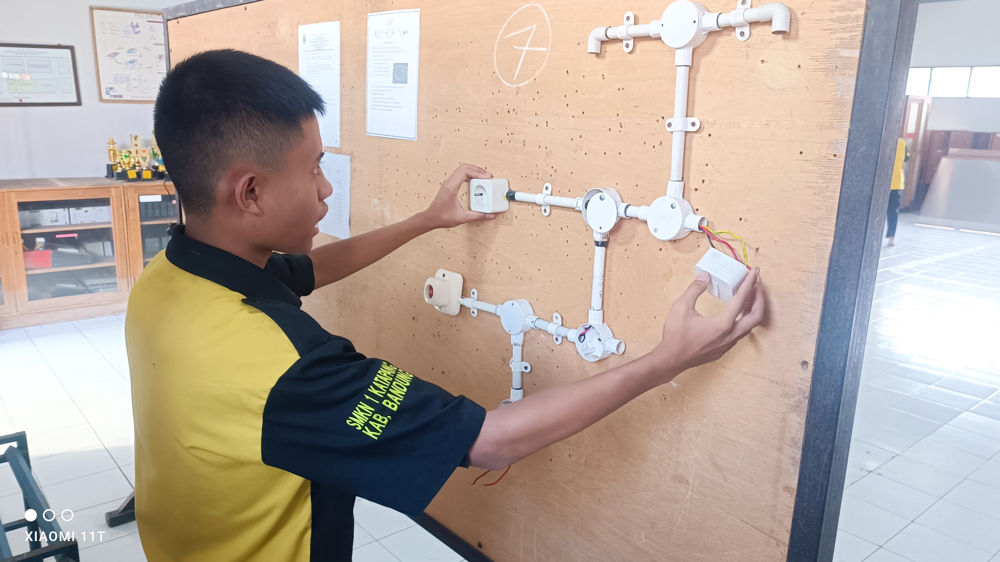

Deskripsi Jurusan
Jurusan Teknik Elektronika Industri adalah jurusan yang mendidik siswa agar mempunyai kemampuan/ keterampilan kepada anak didik dalam bidang system control dan maintenance peralatan industri berbasis “electrical control” dan “microprocessor”.
Tujuan Program Keahlian Teknik Elektronika Industri secara umum mengacu pada isi Undang Undang Sistem Pendidikan Nasional (UU SPN) pasal 3 mengenai Tujuan Pendidikan Nasional dan penjelasan pasal 15 yang menyebutkan bahwa pendidikan kejuruan merupakan pendidikan menengah yang mempersiapkan peserta didik terutama untuk bekerja dalam bidang tertentu. Secara khusus tujuan Program Keahlian Teknik Elektronika Industri adalah membekali peserta didik dengan keterampilan, pengetahuan dan sikap agar kompeten:
- Mendidik peserta didik dengan keahlian dan keterampilan dalam Program Keahlian Teknik Elektronika Industri agar dapat bekerja baik secara mandiri atau mengisi lowongan pekerjaan yang ada di dunia usaha dan dunia industri sebagai tenaga kerja tingkat menengah.
- Mendidik peserta didik agar mampu memilih karir, berkompetisi, dan mengembangkan sikap profesional dalam Program Keahlian Teknik Elektronika Industri.
Kompetensi
Kompetensi Jurusan Teknik Elektronika Industri meliputi pengetahuan dan keterampilan elektronika umum, mikrokontroller dan mikroprocessor, pneumatic dan PLC, programming berbasis komputer yang erat kaitannya dengan proses produksi di Industri. Dikutip dari SMKN 1 KTAPANG, berikut adalah beberapa kompetensi yang harus dipenuhi.
DASAR KOMPETENSI KEJURUAN
meliputi
- Menerapkan dasar-dasar kelistrikan
- Menerapkan dasar-dasar elektronika
- Menerapkan dasar-dasar teknik digital
- Menerapkan Keselamatan, Kesehatan Kerja (K3)
KOMPETENSI KEJURUAN
- Mengukur besaran-besaran listrik dalam rangkaian elektronika
- Menerapkan konsep elektronika digital dan rangkaian elektronika komputer
- Menerapkan sistem mikroprosesor
- Mengoperasikan sistem operasi komputer
- Mengoperasian software aplikasi program dan gambar
- Menggambar teknik elektronika menggunakan komputer
- Mengoperasikan rangkaian elektronika terapan
- Mengoperasikan power supply elektronika industri
- Memahami komunikasi data sinyal digital antar peralatan elektronika
- Merakit perangkat keras komputer
- Memprogram peralatan sistem pengendali elektronik yang berkaitan akses I/O berbantuan mikroprosesor dan mikrokontroller
- Memprogram peralatan sistem pengendali elektronik yang berkaitan dengan I/O berbantuan PLC dan komputer
- Mengerjakan dasar-dasar pekerjaan bengkel elektronika
- Melaksanakan pemeliharaan peralatan elektronika sistem pengendali elektronika
- Merakit peralatan dan perangkat elektronik sistem pengendali elektronika
- Melaksanakan pemeliharaan peralatan elektronik sistem otomasi elektronika
- Merakit peralatan dan perangkat elektronik sistem otomasi elektronika
KOMPETENSI TAMATAN
Kemampuan tamatan program keahlian Teknik Elektronika Kompetensi Teknik Elektronika Industri adalah :
- Sebagai tenaga ahli di bidang teknik Elektronika Industri baik lokal maupun berbasis luas
- instalasi peralatan Elektronika industri baik sekala besar, menengah dan kecil
- Memperbaiki instrumen elektronika

karakter yang sesuai
- Teliti
- Tekun
- Detil
- Rasional
- Terstruktur
- Senang berhitung
- Senang menganalisis
- Senang bekerja sendiri
- Senang melakukan riset
prospek kerja
Perkembangan Teknologi sangat pesat terutama dalam bidang robotika. Untuk itulah dibutuhkan tenaga-tenaga terampil untuk dapat menjawab tantangan perkembangan tersebut dan jurusan Teknik Elekronika Industri menjadi solusinya. Selain itu lulusan Teknik Elektronika Industri banyak dibutuhkan di dunia kerja, karena saat ini semua perusahaan rata-rata memanfaatkan system elektronika untuk melakukan proses produksi seperti PT Pindad Persero, PT Sinar Sosro, dan masih banyak lagi perusahaan lainnya.
Bidang pekerjaan yang dapat diisi oleh tamatan Kompetensi Keahlian Teknik Elektonika Industri antara lain :
- Mengoperasikan, merawat, menginstalasi, menerapkan, dan mereparasi Sistem Elektronika
- Wirausahawan di bidang IT, Elektronika dan perbaikan Industri Teknologi
- Operator di Perusahaan bidang Elektronika
- Perusahaan Elektronika Mitra/pada Instansi Pemerintah, BUMN dan Perusahaan Swasta, seperti PT.LG, Panasonic, Toshiba berbagai Departemen, Pemprov, Pemkot /Pemkab.
perguruan tinggi yang relevan
Setelah lulus anda bisa melanjutkan ke jenjang yang lebih tinggi baik itu D3, D4, maupun S1 dengan mengambil jurusan elektro dengan konsentrasi Elektronika Industri. Jika kamu ingin melanjutkan pendidikan ke perguruan tinggi, berikut beberapa contoh perguruan tinggi yang dapat kamu jadikan sebagai perguruan tinggi incaran kamu.
- Institut Teknologi Bandung
- Universitas Indonesia
- Universitas Gadjah Mada
- Universitas Negeri Yogyakarta
- Institut Teknologi Sepuluh November
- Universitas Diponegoro
- Universitas Brawijaya.
Berbekal pendidikan selama 3 tahun, SMK Jurusan Teknik Elektronika Industri akan membekali siswa dengan pengetahuan ataupun keterampilan tentang Teknik Elektronika Industri . Peluang kerja untuk para lulusan SMK Jurusan Teknik Elektronika Industri pun juga sangat bervariasi. Nah, dengan slogan "SMK Bisa!", siswa SMK dipersiapkan agar kapabel, kompetitif dan siap kerja. Siswa SMK tidak hanya disuguhkan teori, akan tetapi juga praktik lapangan sesuai dengan bidang kejuruannya.